Ba bài báo của thầy: chọn ngưỡng chia cây quyết định trên luồng dữ liệu và trên cụm song song
HADOOP 07 · Phần 8 · Streaming × MPC × Hadoop
Ba bài báo của thầy: chọn ngưỡng chia cây quyết định trên luồng dữ liệu và trên cụm song song
Phần bonus của bài trình bày nối hai nửa của môn học: thuật toán streaming (đủ bộ nhớ hay không) và hệ sinh thái Hadoop (dữ liệu nằm trên nhiều máy). Module này đọc kỹ ba bài báo của thầy Tạ Duy Hoàng và cộng sự, phân biệt rõ phần nào là kết quả đã chứng minh, phần nào còn mở, phần nào là cách nhóm đối chiếu với Chương 2.
PHẦN 1/9
01
Bối cảnh: cây quyết định, và vì sao chọn ngưỡng chia quy về một phép đếm theo khoảng
Cây quyết định xây từ trên xuống (CART, ID3): mỗi nút phải chọn một ngưỡng chia
Hình thức hoá: luồng $(x_i, y_i)$, ngưỡng $j$, sai số MSE, tỉ lệ phân loại sai, Gini
Ví dụ tính tay: 8 điểm, thử mọi ngưỡng, ngưỡng tốt nhất là $j=4$
Cây quyết định xây từ trên xuống, và vì sao chọn ngưỡng chia là việc lặp lại nhiều nhất
🗣️ Nói nôm na: trò chơi "20 câu hỏi": mỗi câu hỏi chia tập đáp án làm hai. Câu hỏi hay là câu chia thật "sạch": một bên gần như toàn đáp án giống nhau.
Với dữ liệu số, một câu hỏi có dạng "tuổi nhỏ hơn hay bằng 30?", con số 30 chính là ngưỡng chia.
Các thuật toán cổ điển CART và ID3 dựng cây từ trên xuống: ở mỗi nút, thử các ngưỡng và chọn ngưỡng làm tiêu chí
(Gini impurity, tỉ lệ phân loại sai hoặc entropy cho phân loại; sai số bình phương trung bình cho hồi quy) tốt nhất, rồi lặp lại ở hai nhánh con.
Cây quyết định là nền của hầu hết các mô hình tập hợp mạnh trên dữ liệu dạng bảng: random forest, AdaBoost, gradient boosting, XGBoost, LightGBM, CatBoost.
Ngành
Ngưỡng chia điển hình (minh hoạ)
Điều cần tối ưu
Ngân hàng
"Thu nhập tháng ≤ 15 triệu?"
Hai nhóm con có tỉ lệ nợ xấu khác nhau nhất
Y tế
"Huyết áp tâm thu ≤ 140?"
Hai nhóm con có mức nguy cơ khác nhau nhất
Nông nghiệp
"Lượng mưa tháng ≤ 120 mm?"
Hai nhóm con có năng suất trung bình khác nhau nhất
Vì sao dùng thuật toán tham lam
Các bài báo nhắc rằng tìm cây quyết định tối ưu là bài toán NP-hard, nên người ta dùng heuristic tham lam từng nút.
Vì mỗi nút của mỗi cây trong mỗi mô hình tập hợp đều phải chọn ngưỡng, chọn ngưỡng chia là phép toán lõi bị lặp lại hàng tỉ lần. Đó là lý do đáng làm nó rẻ về bộ nhớ.
Hình thức hoá: luồng quan sát, ngưỡng $j$ và ba loại sai số
Figure 1 (arXiv:2403.19867v4): trái là hồi quy, phải là phân loại; cả hai có ngưỡng tối ưu $j=4$.
Luồng $(x_1,y_1),\dots,(x_m,y_m)$ với $x_i\in[N]=\{1,\dots,N\}$ (số thực được rời rạc hoá vì máy tính có độ chính xác hữu hạn).
Nhãn: $y_i\in[0,M]$ (hồi quy) hoặc $y_i\in\{-1,+1\}$ (phân loại).
Ngưỡng $j$ chia thành hai đoạn $[1,j]$ và $[j+1,N]$.
Mục tiêu: tìm $\hat j$ với $L(\hat j)\le \mathrm{OPT}+\varepsilon$ (sai số cộng $\varepsilon$) hoặc $L(\hat j)\le(1+\varepsilon)\mathrm{OPT}$ (sai số nhân), trong đó $\mathrm{OPT}=\min_j L(j)$.
Trên hình: ở hồi quy, hai đường chấm là trung bình hai phía; ở phân loại, mỗi phía dự đoán theo nhãn đa số.
Điều cần nhìn ra
Để tính $L(j)$ ta chỉ cần, với mỗi phía của ngưỡng, ba con số: số điểm, tổng nhãn, tổng bình phương nhãn (hồi quy), hoặc số điểm theo từng nhãn (phân loại).
Tức là toàn bộ bài toán quy về đếm theo khoảng, đúng như cách các bài báo gọi các đại lượng $f_R$.
Cách đọc Figure 1 của bài báo: đếm lại từng điểm trên hình
Nguồn: Phạm, Tạ, Vu, Constructing Decision Trees from Data Streams, arXiv:2403.19867v4, Figure 1.
🗣️ Nói nôm na: kẻ một đường thẳng đứng chia các điểm làm hai nhóm. Bên nào cũng đoán chung một giá trị cho cả nhóm: hồi quy thì đoán bằng trung bình, phân loại thì đoán theo nhãn chiếm đa số. Đường kẻ tốt là đường làm tổng lỗi của hai bên nhỏ nhất.
Hình
Nhìn thấy gì
Nhóm tự tính lại (toạ độ đọc từ hình)
Trái: hồi quy
Vạch đứng tại $x=4$ là ngưỡng. Hai đường chấm ngang ở $y=7$ và $y=2$ là giá trị dự đoán của hai phía
Trái có 7 điểm với $y=7,6,8,7,8,6,7$: tổng 49, trung bình 7. Phải có 7 điểm với $y=2,2,1,3,2,3,1$: tổng 14, trung bình 2. Lỗi bình phương mỗi phía bằng 4, nên $L(4)=(4+4)/14\approx0{,}57$
Phải: phân loại
Chấm đặc và chấm rỗng là hai nhãn. Vạch đứng cũng tại $x=4$
Trái $[1,4]$: 4 chấm đặc, 2 chấm rỗng, đoán "đặc", sai 2. Phải $[5,10]$: 5 chấm rỗng, 1 chấm đặc, đoán "rỗng", sai 1. $L(4)=3/12=0{,}25$
Thử ngưỡng khác ở hình phải: $j=3$ cho sai $2+2=4$ điểm, $j=5$ cho sai $3+1=4$ điểm, $j=2$ cho sai $2+3=5$ điểm. Vậy $j=4$ với 3 điểm sai là tốt nhất, đúng như chú thích hình.
Vì sao hai đường chấm khớp trung bình
Với một nhóm số cho trước, hằng số làm tổng bình phương sai lệch nhỏ nhất chính là trung bình của nhóm (bài 3 nhắc lại điều này ở Lemma 11). Vì thế bài báo định nghĩa $\mu(j)$ và $\gamma(j)$ là trung bình nhãn hai phía.
Ví dụ tính tay: 8 điểm, thử mọi ngưỡng, ngưỡng tốt nhất là $j=4$
Dữ liệu (giả định, tự dựng cho khớp ý Figure 1): $m=8$ điểm, $x=1,\dots,8$ và $y=(6,8,7,7,2,3,2,1)$.
Dùng $\mathrm{SSE}(R)=q_R-s_R^2/n_R$ với $n_R$ = số điểm, $s_R$ = tổng $y$, $q_R$ = tổng $y^2$ của đoạn $R$ (suy ra từ $\sum(y-\bar y)^2=q-s^2/n$).
$j$
Trái $(n,s,q)$
SSE trái
Phải $(n,s,q)$
SSE phải
Tổng
$L(j)=\text{Tổng}/8$
1
(1, 6, 36)
0
(7, 30, 180)
$180-900/7\approx51{,}43$
51,43
6,43
2
(2, 14, 100)
2
(6, 22, 116)
$116-484/6\approx35{,}33$
37,33
4,67
3
(3, 21, 149)
2
(5, 15, 67)
22
24
3,00
4
(4, 28, 198)
2
(4, 8, 18)
2
4
0,50
5
(5, 30, 202)
22
(3, 6, 14)
2
24
3,00
6
(6, 33, 211)
29,5
(2, 3, 5)
0,5
30
3,75
7
(7, 35, 215)
40
(1, 1, 1)
0
40
5,00
Không chia ($j=0$ hoặc $j=8$): $216-36^2/8=54$, $L=6{,}75$. Ngưỡng tối ưu là $j=4$ với $\mathrm{OPT}=0{,}5$, đúng như ví dụ trên Figure 1.
Mẹo tính nhanh: dùng tổng tiền tố của $n$, $s$, $q$, rồi phía phải bằng tổng toàn bộ trừ phía trái. Có thể tự thử lại trong mô phỏng cuối trang.
PHẦN 2/9
02
Hai mô hình tính toán: streaming (đếm lượt duyệt và bộ nhớ) và MPC (đếm số vòng)
Streaming: bộ nhớ dưới tuyến tính, 1 hoặc vài lượt duyệt, cập nhật $O(1)$
MPC: $m$ quan sát chia cho $m^{1-\beta}$ máy, mỗi máy $\tilde O(m^{\beta})$ bộ nhớ, đo bằng số vòng
Hai mô hình khác nhau ở thứ khan hiếm, nhưng cùng trả giá cho một phép đếm theo khoảng
Mô hình streaming: lượt duyệt, bộ nhớ, thời gian cập nhật
🗣️ Nói nôm na: băng chuyền hàng chạy qua trước mặt bạn một lần; bạn chỉ có một cái túi nhỏ để ghi chú, không thể chất cả hàng xuống đất rồi đếm.
Muốn xem lại thì phải chạy băng chuyền lần nữa, đó là một lượt duyệt (pass) thêm.
Đại lượng
Ý nghĩa trong bài báo
Bộ nhớ (space)
Dưới tuyến tính: $o(m)$ và $o(N)$. Ký hiệu $\tilde O(\cdot)$ giấu các hệ số polylog
Số lượt duyệt (passes)
Lý tưởng là 1; cho phép vài lượt; có thuật toán đổi bộ nhớ lấy số lượt qua tham số $\beta$
Thời gian cập nhật (update time)
Chi phí xử lý mỗi phần tử đến, thường $O(1)$
Thời gian hậu xử lý (post-processing)
Chi phí tính đáp án sau khi luồng kết thúc
Luồng chỉ thêm (insertion-only) và luồng động
Luồng động có cả xoá; dùng Count-Min sketch với phân rã dyadic, thêm hệ số $\log N$ vào bộ nhớ và thời gian
$D$
Số giá trị phân biệt của $x_i$; có thể lớn tới $N$
Vì sao bài toán này đáng phải làm
Bài báo nêu 3 lý do: (1) dữ liệu thường quá lớn để nạp vào bộ nhớ chính một máy và được đọc dạng luồng từ đĩa hoặc mạng;
(2) đặc trưng có số giá trị $N$ rất lớn (đặc trưng thứ bậc cao, đặc trưng ghép) làm bộ nhớ và thời gian phình ra; (3) trong mô hình tập hợp thường phải huấn luyện rất nhiều đặc trưng và rất nhiều cây song song, nên dùng $o(N)$ bộ nhớ cho mỗi đặc trưng mỗi cây giảm mạnh dấu chân bộ nhớ tổng.
Mô hình MPC: $m$ quan sát, $m^{1-\beta}$ máy, mỗi máy $\tilde O(m^{\beta})$ bộ nhớ
MPC (Massively Parallel Computation) là mô hình lý thuyết mà các bài báo gọi là phép trừu tượng hoá của MapReduce, Hadoop và Spark. Có $m$ quan sát chia cho $m^{1-\beta}$ máy, mỗi máy có bộ nhớ
$\tilde O(m^{\beta})$ với $0<\beta<1$. Trong mỗi vòng đồng bộ, mọi máy có thể gửi và nhận thông điệp từ mọi máy khác rồi tính cục bộ. Độ phức tạp của thuật toán là số vòng.
Tổng bộ nhớ của cụm
$$m^{1-\beta}\times m^{\beta}=m$$
Tổng bộ nhớ chỉ vừa đủ chứa dữ liệu một lần: cụm không thể "ôm" cả dữ liệu vào một máy, và cũng không thể dư sức nhân bản. Ví dụ (minh hoạ, bỏ hằng số và polylog): $m=10^6$ quan sát.
$\beta$
Số máy $m^{1-\beta}$
Bộ nhớ mỗi máy $m^{\beta}$
Số vòng cỡ $1/\beta$
$1/3$
10.000
100
3
$1/2$
1.000
1.000
2
$2/3$
100
10.000
1,5 (tức vài vòng)
Cụm càng nhiều máy nhỏ ($\beta$ nhỏ) thì mỗi máy càng ít bộ nhớ và số vòng tăng theo $1/\beta$. Đây là đánh đổi mà các bài báo gọi tên bằng cùng một tham số $\beta$ cho cả streaming và MPC.
Đối chiếu với Chương 2
Máy ↔ container/DataNode; bộ nhớ mỗi máy ↔ bộ nhớ một task; một vòng ↔ một job MapReduce có shuffle (module hd-02). Theo bài MapReduce, mỗi vòng thêm nghĩa là map ghi file trung gian xuống đĩa cục bộ rồi reduce đọc từ xa: đó là lý do đếm số vòng.
Hai mô hình đặt cạnh nhau: cùng một bài toán, hai thứ khan hiếm
Streaming
MPC (MapReduce, Hadoop, Spark)
Dữ liệu
Một luồng đi qua một máy
$m$ quan sát chia cho $m^{1-\beta}$ máy
Thứ khan hiếm
Bộ nhớ của một máy
Bộ nhớ của mỗi máy
Chi phí được đếm
Số lượt duyệt dữ liệu
Số vòng giao tiếp
Kết quả điển hình (hồi quy)
1 lượt, bộ nhớ $\tilde O(M^2/\varepsilon)$ (bài 3)
$O(1)$ vòng, mỗi máy $\tilde O(\sqrt m)$, sai số $\mathrm{OPT}+1/\sqrt m$ (bài 2)
Đánh đổi theo $\beta$
$O(1/\beta)$ lượt, bộ nhớ $\tilde O(N^{\beta}/\varepsilon^2)$
$O(1/\beta)$ vòng, mỗi máy $\tilde O(m^{\beta}/\varepsilon^2)$
Công cụ chính
Lấy mẫu, Count-Min sketch với phân rã dyadic
Lấy mẫu cục bộ, một máy trung tâm, gửi đi các ứng viên
Cách đọc đúng
Hai dòng $O(1/\beta)$ cho thấy cùng một thuật toán "đoán sai số + tìm nhị phân" được chạy ở hai mô hình: tham số $\beta$ quyết định mỗi lần mô phỏng được bao nhiêu bước tìm nhị phân cùng lúc.
Chi tiết nằm ở các phần 4 và 6 của module này.
PHẦN 3/9
03
Công trình nền tảng (Domingos-Hulten) và khoảng trống mà các bài báo của thầy lấp
VFDT (KDD 2000): luồng vô hạn, i.i.d., chỉ phân loại; được trích dẫn hơn 3000 lần
Các hướng liên quan: rừng ngẫu nhiên thích nghi, concept drift, scikit-multiflow, River
Các bài của thầy: không giả định vô hạn, không giả định i.i.d., có hồi quy, có chứng minh
Công trình nền tảng: Domingos-Hulten (KDD 2000) và những người đi tiếp
Các bài báo gọi công trình của Domingos và Hulten (KDD 2000) là công trình "nền tảng" (seminal) về học cây quyết định trên luồng dữ liệu; theo chú thích trong bài, được trích dẫn hơn 3000 lần
(theo Google Scholar tại thời điểm viết bài). Bài báo Hulten, Spencer, Domingos (KDD 2001) mở rộng sang luồng thay đổi theo thời gian.
Công trình
Điều bài báo thầy nêu
Domingos-Hulten 2000
Xét luồng vô hạn các quan sát được rút độc lập từ một phân phối chưa biết (i.i.d.); chỉ bài toán phân loại, không xét hồi quy; định lượng số mẫu cần để tìm ngưỡng tốt nhất và chặn xác suất một mẫu đi lệch nhánh so với cây dựng từ toàn bộ dữ liệu; giả định một mẫu tới lá ở mỗi tầng với xác suất hằng số
Ben-Haim và Tom-Tov
Heuristic cây quyết định cho dữ liệu luồng song song, dùng histogram trực tuyến; chạy tốt trong thực tế
Gomes và cộng sự
Rừng ngẫu nhiên thích nghi cho phân loại trên luồng thay đổi theo thời gian
Hệ thống mã nguồn mở
Các gói C++ và Python như scikit-multiflow và River được dùng thương mại rộng rãi; hướng phổ biến khác là phát hiện concept drift
Tatti; Silva và cộng sự; Assis và cộng sự
Tìm ngưỡng chia trên luồng thưa; tính ngưỡng chia trong môi trường học liên kết (federated); độ bền cấu trúc trong luồng tiến hoá
Các công trình trên chủ yếu là heuristic và hệ thống. Điểm chung: ít có đảm bảo chứng minh được về bộ nhớ và số lượt duyệt cho bài toán chọn ngưỡng chia.
Khoảng trống và đóng góp: so sánh trực diện
Tiêu chí
Domingos-Hulten (2000)
Các bài của thầy (2024 đến 2026)
Độ dài luồng
Vô hạn
Hữu hạn, không cần giả định vô hạn
Giả định phân phối
i.i.d. (độc lập, cùng phân phối)
Không giả định i.i.d.
Bài toán
Chỉ phân loại
Hồi quy, phân loại (misclassification, Gini), thuộc tính phân loại
Kiểu đảm bảo
Chặn xác suất theo số mẫu, dưới giả định i.i.d.
Đảm bảo cộng $\varepsilon$ hoặc nhân $(1+\varepsilon)$ so với tối ưu, kèm cận bộ nhớ và số lượt/vòng; bài 3 có cận dưới khớp
Mô hình song song
Không xét
Có phần MPC (MapReduce, Hadoop, Spark)
Vì sao "không i.i.d." quan trọng (ví dụ trong bài 1)
Dữ liệu thu vào buổi sáng có thể phân phối khác dữ liệu thu vào buổi tối. Nếu luồng được thu theo thời gian và phân phối đổi dần,
giả định i.i.d. sai ngay từ đầu, còn thuật toán của thầy vẫn đúng vì nó chỉ dùng số đếm theo khoảng của chính luồng đã thấy.
Khiêm tốn có chủ đích
Chính các bài báo viết rằng kết quả của họ "không so sánh trực tiếp được" (not directly comparable) với Domingos-Hulten mà bổ sung (complement): hai bên trả lời hai câu hỏi hơi khác nhau.
PHẦN 4/9
04
Bài báo 1 (arXiv 03/2024): bộ ba thuật toán cho hồi quy và bước đầu sang MPC
Thuật toán 1 lượt chính xác: lưu ba bảng đếm $A_t$, $B_t$, $C_t$, bộ nhớ $\tilde O(D)$
Thuật toán 2 lượt xấp xỉ cộng $\varepsilon$: lấy mẫu chọn ứng viên, rồi đếm chính xác trên ứng viên
Thuật toán nhiều lượt xấp xỉ $(1+\varepsilon)$: đoán sai số, tìm nhị phân; đổi lượt lấy bộ nhớ qua $\beta$
Bài báo 1: ba kết quả chính cho hồi quy và hai cho phân loại
Trang đầu bài báo 1, arXiv:2403.19867v1 [cs.DS], 28/03/2024.
Finding Decision Tree Splits in Streaming and Massively Parallel Models (Huy Phạm, Tạ Duy Hoàng, Hoa T. Vu), arXiv:2403.19867v1, 28/03/2024. Tóm tắt: thuật toán streaming tìm ngưỡng chia tối ưu với bộ nhớ dưới tuyến tính và ít lượt, mở rộng được sang MPC, bổ sung cho Domingos-Hulten.
Bài toán
Bộ nhớ
Số lượt
Đảm bảo
Hồi quy
$\tilde O(D)$
1
Tối ưu, $L(j)=\mathrm{OPT}$ (tất định)
Hồi quy, $M=O(1)$
$\tilde O(1/\varepsilon)$
2
$L(j)\le \mathrm{OPT}+\varepsilon$
Hồi quy
$\tilde O(1/\varepsilon^2)$
$O(\log N)$
$L(j)\le(1+\varepsilon)\mathrm{OPT}$
Phân loại (số)
$\tilde O(1/\varepsilon)$
1
$L(j)\le \mathrm{OPT}+\varepsilon$
Phân loại (số)
$\tilde O(1/\varepsilon^2)$
$O(\log N)$
$L(j)\le(1+\varepsilon)\mathrm{OPT}$
Phân loại (thuộc tính phân loại)
$\tilde O(N/\varepsilon)$
1
$L(A,B)\le \mathrm{OPT}+\varepsilon$; cận dưới $\Omega(N)$ cho mọi thuật toán hằng số lượt
Ghi chú về phạm vi
Nhóm tìm cây quyết định chỉ một điểm chia (cây sâu 1, còn gọi là decision stump, cũng là weak learner của AdaBoost); để dựng cây sâu hơn thì áp dụng lặp lại thuật toán,
thêm lượt duyệt. Với nhiều thuộc tính, chạy riêng từng thuộc tính rồi chọn tốt nhất: bộ nhớ nhân thêm hệ số $d$.
Thuật toán 1 lượt chính xác: ba bảng đếm $A_t$, $B_t$, $C_t$
🗣️ Nói nôm na: với mỗi giá trị $x$ đã thấy, giữ ba ô ghi chú: đã gặp mấy lần ($A$), tổng các nhãn ($B$), tổng bình phương các nhãn ($C$). Hết luồng thì gộp các ô lại là tính được sai số của mọi ngưỡng.
Vì sao đúng: khai triển $(y_i-\mu)^2=y_i^2+\mu^2-2y_i\mu$ rồi gom theo giá trị $x$: mọi thứ chỉ còn phụ thuộc $A_t$, $B_t$, $C_t$. Bộ nhớ $\tilde O(D)$ vì chỉ cần 3 ô cho mỗi giá trị phân biệt; thời gian hậu xử lý $O(D)$ nhờ tổng tiền tố.
Kiểm tra bằng ví dụ 8 điểm (mỗi $x$ xuất hiện một lần nên $A_t=1$, $B_t=y_t$, $C_t=y_t^2$): với $j=4$, trái có $\sum A=4$, $\sum B=28$, $\sum C=198$, nên $\mu=7$ và phần trái $=198+7^2\cdot 4-2\cdot 7\cdot 28=198+196-392=2$; phải có $\sum A=4$, $\sum B=8$, $\sum C=18$, nên $\gamma=2$ và phần phải $=18+16-32=2$; tổng $4$, $L=4/8=0{,}5$, khớp bảng tính tay.
Điểm yếu
Bộ nhớ tỉ lệ với $D$, có thể bằng $N$. Khi $N$ rất lớn (đặc trưng thứ bậc cao) ta cần xấp xỉ: đó là việc của hai thuật toán sau.
Hình gốc Algorithm 1: đọc từng dòng của thuật toán 1 lượt
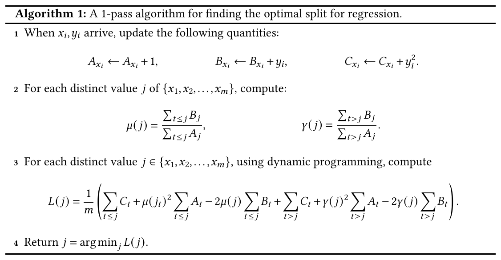
Constructing Decision Trees from Data Streams, arXiv:2403.19867v4, Algorithm 1." style="max-height:330px;max-width:100%;width:auto;height:auto;border:1px solid var(--border);border-radius:8px;background:#fff">Nguồn: Phạm, Tạ, Vu, Constructing Decision Trees from Data Streams, arXiv:2403.19867v4, Algorithm 1.
Dòng 1 (khi một cặp $(x_i,y_i)$ đến): mở đúng "ngăn kéo" mang số $x_i$ và sửa ba con số trong đó: số lần gặp $A$, tổng nhãn $B$, tổng bình phương nhãn $C$. Không lưu lại cặp dữ liệu.
Dòng 2 (hết luồng): với mỗi ngưỡng $j$, $\mu(j)$ = tổng nhãn bên trái chia số điểm bên trái; $\gamma(j)$ tương tự cho bên phải.
Dòng 3: công thức $L(j)$ chỉ dùng các tổng của $A$, $B$, $C$. "Quy hoạch động" ở đây là tổng tiền tố: tổng tới $j$ bằng tổng tới $j-1$ cộng thêm ngăn $j$.
Dòng 4: trả về ngưỡng có $L(j)$ nhỏ nhất.
Ví dụ 8 điểm: điểm đến
Ngăn kéo thay đổi
$(x,y)=(1,6)$
$A_1=1$, $B_1=6$, $C_1=36$
$(2,8)$
$A_2=1$, $B_2=8$, $C_2=64$
Giả sử có thêm điểm $(2,6)$ (minh hoạ)
$A_2=2$, $B_2=14$, $C_2=100$: cùng ngăn, chỉ cộng dồn
Ba điều rút ra từ hình
Bộ nhớ = 3 số cho mỗi giá trị $x$ khác nhau, tức $\tilde O(D)$. Mỗi điểm đến chỉ tốn $O(1)$. Thứ tự các điểm đến không ảnh hưởng kết quả, vì phép cộng không phụ thuộc thứ tự: đây là lý do thuật toán không cần giả định i.i.d.
Thuật toán 2 lượt xấp xỉ cộng $\varepsilon$: lấy mẫu chọn ứng viên, rồi đếm chính xác
Ý tưởng: không cần thử mọi ngưỡng. Nếu chọn được khoảng $1/\varepsilon$ ứng viên sao cho giữa hai ứng viên liên tiếp có không quá $\varepsilon m$ quan sát, thì ngưỡng tốt nhất trong số ứng viên chỉ kém tối ưu thêm $O(\varepsilon)$.
Lượt
Việc làm
Lượt 1
Lấy mẫu mỗi $x_i$ độc lập với xác suất $p=C\log N/(m\varepsilon)$. Tập ứng viên $S$ gồm các giá trị được lấy mẫu, giá trị kề bên, cùng $0$ và $N$
Lượt 2
Với mỗi đoạn giữa hai ứng viên liên tiếp, đếm chính xác $A_t,B_t,C_t$; rồi tính $L(j)$ tại các ứng viên bằng tổng tiền tố; trả về ứng viên tốt nhất
Hai bổ đề then chốt (nhắc lại khi chứng minh):
Đơn điệu: với tập $S'\subseteq S$ thì $g(S')\le g(S)$, trong đó $g(S)=\sum_{z\in S}(z-\mu(S))^2$: thêm phần tử không bao giờ làm tổng bình phương lệch giảm.
Gần như liên tục (kiểu Lipschitz): với $j'>j$ và $b$ là số quan sát trong $(j,j']$ thì $L(j')\le L(j)+\dfrac{5bM^2}{4m}$. Dịch ngưỡng qua ít quan sát thì sai số chỉ đổi chút.
Kiểm chứng bổ đề trên ví dụ 8 điểm ($M=8$, $m=8$): dịch từ $j=4$ sang $j'=5$ vượt qua $b=1$ quan sát, vế phải $=0{,}5+5\cdot1\cdot64/(4\cdot8)=10{,}5$; thực tế $L(5)=3\le10{,}5$. Cận đúng nhưng khá lỏng, vì nó phải đúng cho mọi dữ liệu.
Cách đọc của nhóm (không phải câu chữ của bài báo)
Tính chất "giữa hai ứng viên có không quá $\varepsilon m$ quan sát" chính là tính chất của một xấp xỉ phân vị (quantile): lấy mẫu ngẫu nhiên cho ta các điểm chia gần đều theo số lượng quan sát.
Điều này nối thẳng với kiến thức quantile sketch đã học ở nửa đầu môn, dù bài báo dùng lấy mẫu chứ không dùng q-digest, MRL hay KLL.
Hình gốc Algorithm 2: lượt một chọn ứng viên, lượt hai đếm chính xác
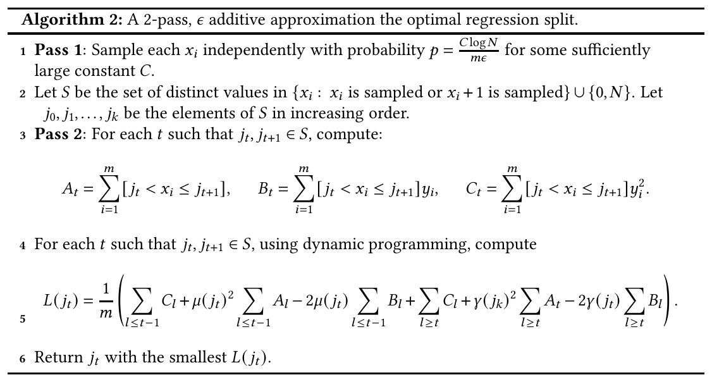
Constructing Decision Trees from Data Streams, arXiv:2403.19867v4, Algorithm 2." style="max-height:290px;max-width:100%;width:auto;height:auto;border:1px solid var(--border);border-radius:8px;background:#fff">Nguồn: Phạm, Tạ, Vu, Constructing Decision Trees from Data Streams, arXiv:2403.19867v4, Algorithm 2.
🗣️ Nói nôm na: thay vì thử mọi vạch chia, lượt đầu bốc thăm vài giá trị $x$ làm vạch ứng viên. Lượt hai mới đếm thật kỹ, nhưng chỉ đếm theo từng khoang nằm giữa hai vạch liền nhau.
Dòng
Ý nghĩa
1
Mỗi điểm được giữ với xác suất $p=C\log N/(m\varepsilon)$, nên số điểm giữ lại kỳ vọng là $pm=C\log N/\varepsilon$: không phụ thuộc $m$
2
$S$ gồm mọi giá trị được bốc và giá trị đứng ngay trước nó, thêm hai đầu mút $0$ và $N$
3
Lượt hai: mỗi khoang $(j_t,j_{t+1}]$ có ba ngăn $A_t,B_t,C_t$ như Algorithm 1, nhưng số ngăn chỉ bằng số ứng viên
4 đến 6
Tính $L$ tại từng ứng viên bằng tổng tiền tố rồi trả về ứng viên tốt nhất
Chạy thử trên ví dụ 8 điểm (minh hoạ, $N=8$):
Giá trị được bốc
Tập ứng viên $S$
$L$ tại các ứng viên
Trả về
4 và 7
$\{0,3,4,6,7,8\}$
6,75; 3,0; 0,5; 3,75; 5,0; 6,75
$j=4$, đúng tối ưu
2 và 6
$\{0,1,2,5,6,8\}$
6,75; 6,43; 4,67; 3,0; 3,75; 6,75
$j=5$, kém tối ưu 2,5
Bài học từ lần bốc thứ hai
Giữa hai ứng viên 2 và 5 còn tới 3 điểm, tức gần 40% dữ liệu, nên ngưỡng tốt nhất $j=4$ bị bỏ sót. Đảm bảo $\mathrm{OPT}+\varepsilon$ của bài báo dựa trên việc mỗi khoang chứa không quá $\varepsilon m$ điểm, điều chỉ đúng khi bốc đủ nhiều: ví dụ 8 điểm quá nhỏ để lấy mẫu có ý nghĩa, nó chỉ để thấy cơ chế.
Thuật toán nhiều lượt $(1+\varepsilon)$: đoán sai số, tìm nhị phân, và đổi lượt lấy bộ nhớ
🗣️ Nói nôm na: trò đoán số: "sai số của phía trái và phía phải của ngưỡng tối ưu cỡ bao nhiêu?". Thử đoán theo thang nhân $(1+\varepsilon)$: $0,1+\varepsilon,(1+\varepsilon)^2,\dots$.
Với mỗi cặp đoán, dùng tìm nhị phân trên $[1,N]$: thử $j$ giữa, nếu cả hai phía đều trong giới hạn đoán thì $j$ khả thi, còn nếu một phía vượt thì loại bỏ nửa tương ứng.
Tình huống tại điểm thử $j$
Kết luận (nhờ tính đơn điệu)
Cả hai phía trong giới hạn đoán
$j$ khả thi, lưu lại $L$
Cả hai phía vượt giới hạn
Cặp đoán này sai, bỏ qua
Chỉ phía trái vượt
Mọi ngưỡng bên phải $j$ còn tệ hơn: tìm tiếp bên trái
Chỉ phía phải vượt
Mọi ngưỡng bên trái $j$ còn tệ hơn: tìm tiếp bên phải
Mỗi bước tìm nhị phân cần 2 lượt duyệt để tính $\mu(j)$, $\gamma(j)$ và hai sai số, nên được $O(\log N)$ lượt, bộ nhớ $\tilde O(1/\varepsilon^2)$ (số cặp đoán). Đổi lượt lấy bộ nhớ: thay vì chạy $r$ bước nhị phân bằng $2r$ lượt, ta kiểm tra luôn
$2^{r+1}-1$ ngưỡng có thể gặp trong 2 lượt, với bộ nhớ $\tilde O(2^r)$. Đặt $2^r=N^{\beta}$ thì cần lặp $O(1/\beta)$ lần: $O(1/\beta)$ lượt, bộ nhớ $\tilde O(N^{\beta}/\varepsilon^2)$.
Ví dụ (minh hoạ): $N=2^{20}\approx10^6$
$r$ (bước nhị phân mỗi đợt)
Số đợt $20/r$
Số lượt $\approx 2\times$ số đợt
Số ngưỡng kiểm tra mỗi đợt $2^{r+1}-1$
Ít bộ nhớ nhất
1
20
40
3
Trung gian
5
4
8
63
Nhiều bộ nhớ hơn
10
2
4
2047
Hình gốc Algorithm 3: vòng lặp đoán sai số và tìm nhị phân
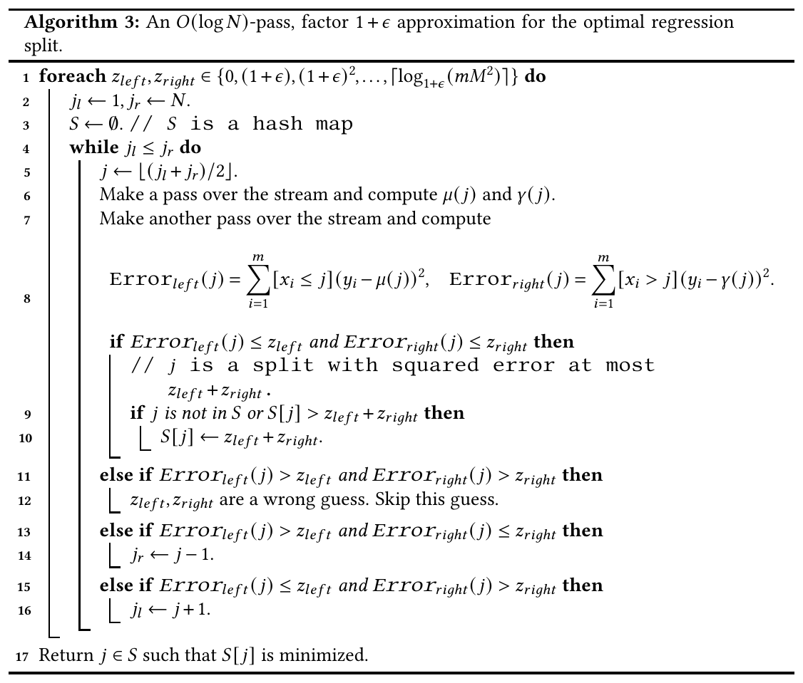
Constructing Decision Trees from Data Streams, arXiv:2403.19867v4, Algorithm 3." style="max-height:470px;max-width:100%;width:auto;height:auto;border:1px solid var(--border);border-radius:8px;background:#fff">Nguồn: Phạm, Tạ, Vu, Constructing Decision Trees from Data Streams, arXiv:2403.19867v4, Algorithm 3.
Dòng 1: duyệt mọi cặp đoán $(z_{left},z_{right})$ theo thang $0,(1+\varepsilon),(1+\varepsilon)^2,\dots$ Đây là đoán tổng lỗi bình phương (chưa chia $m$) của hai phía ở ngưỡng tối ưu.
Dòng 2 đến 5: tìm nhị phân trên $[1,N]$, thử điểm giữa $j$.
Dòng 6 đến 8: một lượt để tính trung bình hai phía, thêm một lượt để tính lỗi hai phía. Mỗi điểm thử tốn 2 lượt.
Dòng 9, 10: cả hai phía không vượt mức đoán thì ghi nhận $j$.
Dòng 11, 12: cả hai phía đều vượt thì cặp đoán sai.
Dòng 13 đến 16: chỉ một phía vượt thì bỏ nửa khoảng tìm kiếm về phía đó.
Dòng 17: trả về $j$ có giá trị ghi nhận nhỏ nhất.
Chạy thử trên ví dụ 8 điểm (minh hoạ), cặp đoán $(2;2)$:
Điểm thử $j$
Lỗi trái
Lỗi phải
Nhánh của thuật toán
4
2 (không vượt)
2 (không vượt)
Dòng 9, 10: ghi $S[4]=4$, tức $L=4/8=0{,}5$
6 (nếu thử)
29,5 (vượt)
0,5
Dòng 13, 14: $j_r\leftarrow5$, tìm sang trái
2 (nếu thử)
2
35,33 (vượt)
Dòng 15, 16: $j_l\leftarrow3$, tìm sang phải
Với cặp đoán $(1;1)$, tại $j=4$ cả hai lỗi đều bằng 2, cùng vượt 1: dòng 11, 12 kết luận đoán sai và bỏ qua.
Vì sao được phép bỏ nửa khoảng
Dời ngưỡng sang phải thì phía trái chỉ thêm điểm, nên lỗi phía trái không giảm (bổ đề đơn điệu). Nếu lỗi trái tại $j$ đã vượt mức đoán thì mọi ngưỡng lớn hơn $j$ cũng vượt, nên chỉ cần tìm bên trái.
PHẦN 5/9
05
Bài báo 2 (arXiv v4 04/2025, ISIT 2025): thêm Gini, thuộc tính phân loại, nhiều thuộc tính và luồng có xoá
Khác bài 1: thêm Gini, tổng quát hoá lượt-bộ nhớ qua $\beta$, viết lại phần MPC
Phân loại: lấy mẫu, ước lượng số đếm, Hoeffding và hợp xác suất (union bound)
Thuộc tính phân loại: bộ nhớ $\tilde O(N/\varepsilon)$ và cận dưới $\Omega(N)$
Luồng có xoá: Count-Min sketch với phân rã dyadic, thêm hệ số $\log N$
Bài báo 2: Constructing Decision Trees from Data Streams, những gì thay đổi so với bài 1
Trang đầu arXiv:2403.19867v4 [cs.DS], 16/04/2025, công bố tại ISIT 2025.
Cùng mã arXiv với bài 1 (v1 và v4 của cùng một bản thảo), nhưng v4 được sửa sâu và đổi tên.
Nội dung
Bài 1 (v1, 03/2024)
Bài 2 (v4, 04/2025)
Giả định i.i.d. và luồng vô hạn
Không dùng
Không dùng (cả hai)
Tiêu chí phân loại
Tỉ lệ phân loại sai
Thêm Gini impurity: $\tilde O(1/\varepsilon^2)$ bộ nhớ, 1 lượt, sai số cộng $\varepsilon$
Thuật toán nhiều lượt
$O(\log N)$ lượt, $\tilde O(1/\varepsilon^2)$ bộ nhớ
$O(1/\beta)$ lượt, $\tilde O(N^{\beta}/\varepsilon^2)$ bộ nhớ: đặt $\beta=1/\log N$ thì quay về kết quả cũ
MPC
Chủ yếu $\alpha=1/2$ (một vòng hằng số)
Viết lại theo $\beta$ (Theorem 13, 14), tóm tắt nêu thẳng MapReduce
Công trình liên quan nêu thêm
Domingos-Hulten 2000
Thêm Hulten-Spencer-Domingos 2001
Cách đọc tên bài
Thuật toán trong bài vẫn tìm một điểm chia (cây sâu 1); tên "Constructing Decision Trees" phản ánh mục tiêu lớn hơn, vì muốn cây sâu hơn thì áp dụng lặp lại thuật toán,
như cả hai bản đều nhắc.
Bảng gốc kết quả streaming của bài 2 và Theorem 1: cách đọc từng hàng
Nguồn: Phạm, Tạ, Vu, Constructing Decision Trees from Data Streams, arXiv:2403.19867v4, Figure 2.
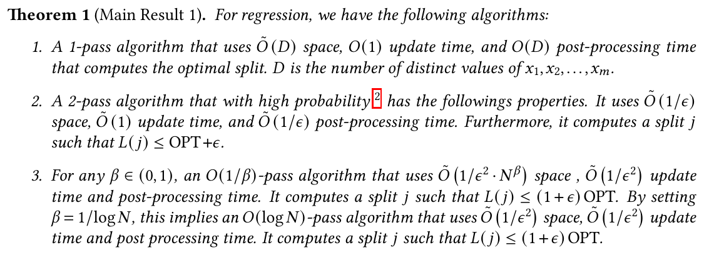
Constructing Decision Trees from Data Streams, arXiv:2403.19867v4, Theorem 1." style="max-height:200px;max-width:100%;width:auto;height:auto;border:1px solid var(--border);border-radius:8px;background:#fff">Nguồn: Phạm, Tạ, Vu, Constructing Decision Trees from Data Streams, arXiv:2403.19867v4, Theorem 1.
Ký hiệu trong bảng: R = hồi quy; C.1 = phân loại theo tỉ lệ phân loại sai; C.2 = phân loại theo Gini; CC.1 = phân loại với thuộc tính không có thứ tự. Ba cột còn lại là bộ nhớ, số lượt duyệt và mức đảm bảo.
Hàng
Đọc thành lời
Thuật toán trong bài
R, $\tilde O(D)$, 1 lượt, $L=\mathrm{OPT}$
Muốn đáp án đúng tuyệt đối thì bộ nhớ tỉ lệ số giá trị $x$ khác nhau
Algorithm 1
R với $M=O(1)$, $\tilde O(1/\varepsilon)$, 2 lượt
Chịu sai thêm $\varepsilon$ thì bộ nhớ không còn phụ thuộc $N$ hay $m$
Algorithm 2
R & C.1, $\tilde O(1/\varepsilon^2\cdot N^{\beta})$, $O(1/\beta)$ lượt, $(1+\varepsilon)\mathrm{OPT}$
Sai số nhân tốt hơn khi OPT nhỏ, đổi lại cần nhiều lượt; $\beta$ là núm vặn giữa lượt và bộ nhớ
Algorithm 3 và 6
C.2, $\tilde O(1/\varepsilon^2)$, 1 lượt
Gini tốn bộ nhớ gấp $1/\varepsilon$ lần so với tỉ lệ phân loại sai
Algorithm 5
CC.1, $\tilde O(N/\varepsilon)$ và $\Omega(N)$
Thuộc tính không thứ tự thì bộ nhớ tuyến tính theo $N$ là không tránh được
Mục 3.2 của bài
Một chỗ cần đọc cẩn thận
Hàng thứ ba của bảng ghi "R & C.1, $\tilde O(1/\varepsilon)$, 1 lượt", trong khi Theorem 1 chỉ nêu thuật toán 2 lượt cho hồi quy với sai số cộng, và bài 3 cũng ghi kết quả cũ của hồi quy là 2 lượt. Nhóm hiểu hàng này chắc chắn đúng cho C.1 (Algorithm 4); với hồi quy, kết quả 1 lượt chỉ có từ bài 3.
Sai số cộng và sai số nhân (minh hoạ): nếu $\mathrm{OPT}=0{,}001$ và $\varepsilon=0{,}1$ thì đảm bảo cộng cho phép $L\le0{,}101$ (lỏng), còn đảm bảo nhân buộc $L\le0{,}0011$ (chặt). Nếu $\mathrm{OPT}=5$ thì ngược lại: cộng cho $5{,}1$, nhân cho $5{,}5$.
Phân loại bằng lấy mẫu: ước lượng số đếm, rồi Hoeffding và hợp xác suất
Với tỉ lệ phân loại sai, $L(j)$ chỉ gồm 4 số đếm theo khoảng: $f_{-1,[1,j]}$, $f_{+1,[1,j]}$, $f_{-1,(j,N]}$, $f_{+1,(j,N]}$. Thuật toán 1 lượt trong bài chỉ làm 3 việc:
Bước
Nội dung
1. Lấy mẫu
Giữ mỗi cặp $(x_i,y_i)$ độc lập với xác suất $p=C\log N/(\varepsilon m)$
2. Ước lượng
Gọi $k$ là số điểm được lấy mẫu có nhãn $l$ trong đoạn $r$; ước lượng $\tilde f_{l,r}=k/p$
3. Chọn
Tính $\tilde L(j)$ cho mọi $j$ là giá trị $x$ được lấy mẫu (bằng recurrence tiền tố $k_{u,[1,j_t]}=k_{u,[1,j_{t-1}]}+k_{u,[j_t,j_t]}$), trả về $j$ nhỏ nhất
Vì sao đúng: theo bất đẳng thức Hoeffding, $\Pr\big(|k-pf|\ge \tfrac{\varepsilon}{4}pm\big)\le 2e^{-\varepsilon^2pm/8}$. Chọn hằng số $C$ đủ lớn thì mỗi ước lượng sai lệch không quá $\varepsilon m/8$ với xác suất $\ge 1-1/N^4$; lấy
hợp xác suất trên $2$ nhãn $\times$ $N$ khoảng thì mọi ước lượng cùng đúng với xác suất $\ge1-1/N$. Khi đó $\tilde L(j^\star)\le\mathrm{OPT}+\varepsilon/4$ và mọi $j$ có $\tilde L(j)\le\mathrm{OPT}+\varepsilon/4$ đều có $L(j)<\mathrm{OPT}+\varepsilon$.
Ví dụ số (minh hoạ, giả định $C\log N=100$): $m=10^6$, $\varepsilon=0{,}01$. Số mẫu kỳ vọng $pm=100/\varepsilon=10\,000$ (chỉ 1% dữ liệu); sai lệch mỗi số đếm $\le\varepsilon m/8=1\,250$, tức $0{,}125\%$ của $m$.
Ôn lại kiến thức đã học
Đây chính là "Hoeffding + union bound" của module 05 và Chernoff của module 04: Hoeffding cho từng số đếm, hợp xác suất cho mọi $N$ khoảng cùng lúc.
Hình gốc Algorithm 4: ước lượng số đếm từ mẫu rồi chọn ngưỡng
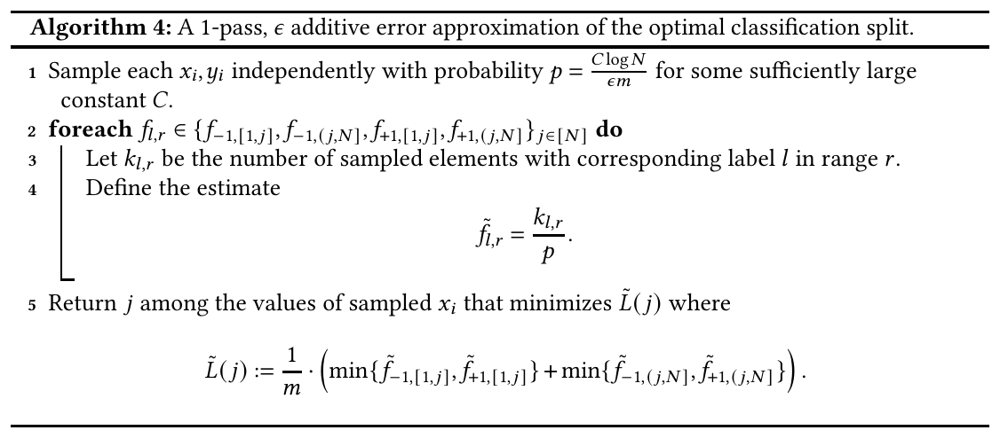
Constructing Decision Trees from Data Streams, arXiv:2403.19867v4, Algorithm 4." style="max-height:250px;max-width:100%;width:auto;height:auto;border:1px solid var(--border);border-radius:8px;background:#fff">Nguồn: Phạm, Tạ, Vu, Constructing Decision Trees from Data Streams, arXiv:2403.19867v4, Algorithm 4.
🗣️ Nói nôm na: giống thăm dò trước bầu cử. Hỏi 1 trong 100 người, thấy 30 người chọn A thì đoán cả vùng có khoảng 3.000 người chọn A: lấy số đếm trong mẫu chia cho tỉ lệ lấy mẫu.
Dòng 1: giữ mỗi cặp với xác suất $p$.
Dòng 2 đến 4: với mỗi nhãn $l$ và mỗi khoảng $r$, đếm số điểm mẫu $k_{l,r}$ rồi đặt $\tilde f_{l,r}=k_{l,r}/p$.
Dòng 5: thay các số đếm thật trong công thức $L(j)$ bằng số ước lượng, chọn $j$ nhỏ nhất trong các giá trị $x$ đã bốc.
Ví dụ (minh hoạ): $m=1000$, $p=0{,}1$, thử $j=40$
Đếm trong mẫu $k$
Ước lượng $k/p$
Nhãn $+1$ bên trái
30
300
Nhãn $-1$ bên trái
8
80
Nhãn $+1$ bên phải
5
50
Nhãn $-1$ bên phải
57
570
$\tilde L(40)=\frac{1}{1000}\big(\min\{80,300\}+\min\{50,570\}\big)=\frac{130}{1000}=0{,}13$. Chỉ cần giữ 100 điểm mẫu thay vì 1000 điểm.
Khác Algorithm 2 ở đâu
Hồi quy cần tổng nhãn và tổng bình phương nhãn, nhạy với vài điểm có nhãn rất lớn, nên Algorithm 2 phải đếm chính xác ở lượt hai. Phân loại chỉ cần đếm số điểm, mà đếm thì ước lượng tốt bằng mẫu, nên một lượt là đủ.
Hình gốc Algorithm 6: cùng khung đoán và tìm nhị phân cho phân loại
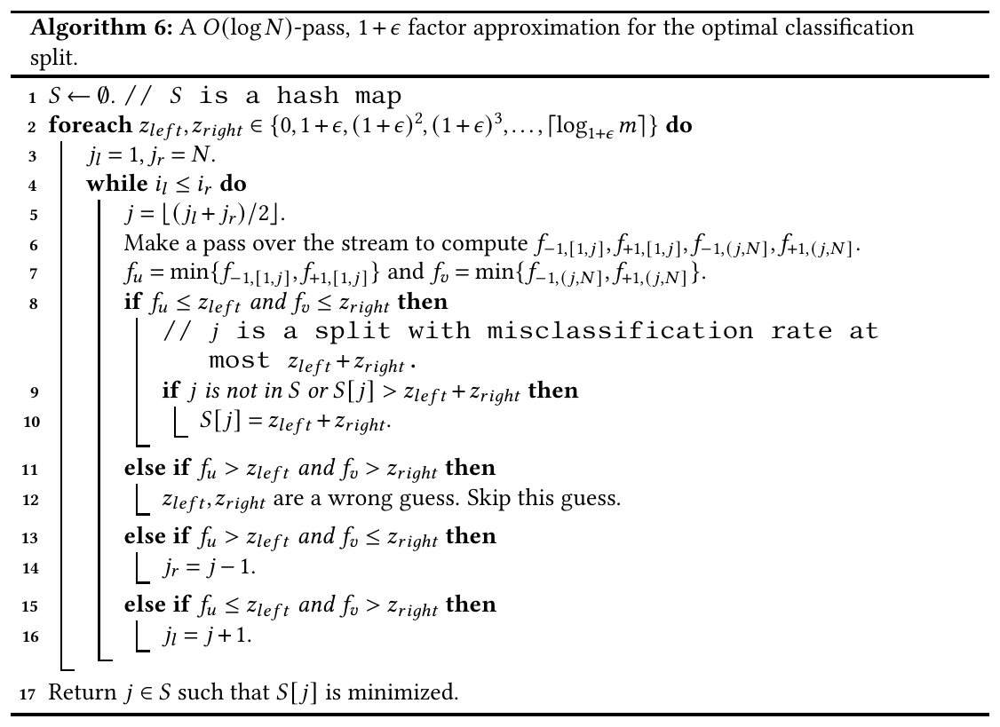
Constructing Decision Trees from Data Streams, arXiv:2403.19867v4, Algorithm 6." style="max-height:420px;max-width:100%;width:auto;height:auto;border:1px solid var(--border);border-radius:8px;background:#fff">Nguồn: Phạm, Tạ, Vu, Constructing Decision Trees from Data Streams, arXiv:2403.19867v4, Algorithm 6.
Algorithm 6 có cùng bộ khung với Algorithm 3. Đặt hai hình cạnh nhau sẽ thấy ba chỗ khác:
Algorithm 3 (hồi quy)
Algorithm 6 (phân loại)
Đại lượng được đoán
Tổng lỗi bình phương hai phía, tối đa $mM^2$
Số điểm phân loại sai hai phía, tối đa $m$
Số lượt cho mỗi điểm thử
2 (tính trung bình, rồi tính lỗi)
1 (đếm bốn số $f$ là đủ)
Điều kiện so sánh
Hai lỗi bình phương
$f_u=\min\{f_{-1,[1,j]},f_{+1,[1,j]}\}$ và $f_v$ tương tự cho phía phải
Bốn nhánh if (dòng 8 đến 16) giống hệt: cả hai đạt thì ghi nhận, cả hai vượt thì đoán sai, một phía vượt thì bỏ nửa khoảng về phía đó.
Điều đáng học về cách làm nghiên cứu
Hai bài toán khác nhau dùng chung một khuôn vì cả hai hàm lỗi cùng có tính đơn điệu: thêm điểm vào một phía thì lỗi phía đó không giảm. Tìm được tính chất chung rồi thì thuật toán gần như viết lại được bằng cách thay tên đại lượng. Kết quả (Lemma 10): $O(\log N)$ lượt, bộ nhớ $\tilde O(1/\varepsilon^2)$, $L(j)\le(1+\varepsilon)\mathrm{OPT}$.
Khai triển ra, $L_{\mathrm{Gini}}(j)=1-\dfrac{f_{+1,[1,j]}^2}{m\,f_{[1,j]}}-\dfrac{f_{-1,[1,j]}^2}{m\,f_{[1,j]}}-\dfrac{f_{+1,(j,N]}^2}{m\,f_{(j,N]}}-\dfrac{f_{-1,(j,N]}^2}{m\,f_{(j,N]}}$.
Khác với tỉ lệ phân loại sai, mỗi số hạng là tỉ số của hai số đếm (một bình phương chia một tổng), nên chỉ đếm bằng lấy mẫu rồi nhân $1/p$ chưa đủ: sai số ở mẫu số khuếch đại.
Điểm trong bài
Ý
Bổ đề 8
Nếu lấy mẫu $C\log N/\varepsilon$ quan sát thì mọi đoạn có từ $\varepsilon m$ điểm trở lên đều chứa ít nhất $K/\varepsilon\cdot\log N$ điểm mẫu: đoạn nào đủ lớn thì được đại diện đủ
Hai mẫu độc lập
Bài lấy hai tập mẫu độc lập $S_1,S_2$ cỡ $C/\varepsilon^2\cdot\log N$ rồi dùng thuật toán 5 để ước lượng các số hạng dạng $f^2/(mf)$
Kết quả
1 lượt, bộ nhớ $\tilde O(1/\varepsilon^2)$, $L_{\mathrm{Gini}}(j)\le\mathrm{OPT}+\varepsilon$ (hàng C.2 của Figure 2)
Suy luận của nhóm về vai trò hai mẫu
Bình phương một số đếm có thể ước lượng không chệch bằng tích hai ước lượng độc lập (vì kỳ vọng của tích độc lập bằng tích kỳ vọng); có lẽ đó là lý do cần hai mẫu độc lập. Nhóm đã đối chiếu với Algorithm 5 và phần chứng minh Lemma 9 (slide sau): bài báo dùng đúng đẳng thức kỳ vọng của tích hai biến độc lập.
Ví dụ số (giả định): $m=6$; phía trái nhãn $(+1,+1,-1)$, phía phải nhãn $(-1,-1,+1)$. Mỗi phía có $\mathrm{Gini}=1-(2/3)^2-(1/3)^2=4/9$, nên $L_{\mathrm{Gini}}=\tfrac36\cdot\tfrac49+\tfrac36\cdot\tfrac49=4/9\approx0{,}444$.
Bài 3 sẽ dùng đúng ví dụ kiểu này để chứng minh $L_{\mathrm{Gini}}=2L_{\mathrm{MSE}}$ (phần 7).
Hình gốc Algorithm 5: hai mẫu độc lập để ước lượng một số hạng của Gini
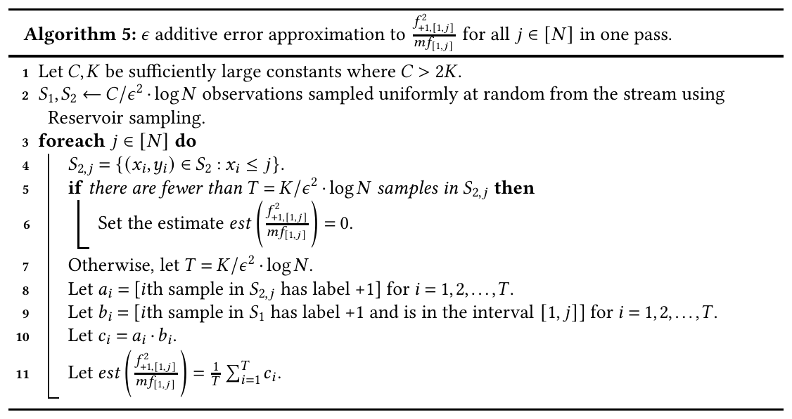
Constructing Decision Trees from Data Streams, arXiv:2403.19867v4, Algorithm 5." style="max-height:300px;max-width:100%;width:auto;height:auto;border:1px solid var(--border);border-radius:8px;background:#fff">Nguồn: Phạm, Tạ, Vu, Constructing Decision Trees from Data Streams, arXiv:2403.19867v4, Algorithm 5.
Mục tiêu: ước lượng $\dfrac{f_{+1,[1,j]}^2}{m\,f_{[1,j]}}$ cho mọi $j$. Tách thành tích hai tỉ lệ:
Thừa số đầu: xác suất một điểm bất kỳ vừa nằm bên trái vừa mang nhãn $+1$. Thừa số sau: trong các điểm bên trái, tỉ lệ mang nhãn $+1$.
Dòng
Ý nghĩa
2
Lấy hai mẫu $S_1,S_2$ bằng reservoir sampling, mỗi mẫu cỡ $C/\varepsilon^2\cdot\log N$
4 đến 6
$S_{2,j}$ là phần của $S_2$ nằm bên trái $j$. Nếu phần này quá ít điểm thì đặt ước lượng bằng 0 (khi đó số hạng thật cũng nhỏ hơn $\varepsilon$)
8
$a_i=1$ nếu điểm thứ $i$ của $S_{2,j}$ có nhãn $+1$: ước lượng thừa số sau
9
$b_i=1$ nếu điểm thứ $i$ của $S_1$ có nhãn $+1$ và nằm bên trái: ước lượng thừa số đầu
10, 11
$c_i=a_ib_i$, ước lượng là trung bình của $T$ giá trị $c_i$
Vì sao cần hai mẫu: trong phần chứng minh Lemma 9, bài báo viết $\mathbb E[c_i]=\mathbb E[b_i]\,\mathbb E[a_i]$. Đẳng thức này chỉ đúng khi $a_i$ và $b_i$ độc lập, tức phải lấy từ hai mẫu khác nhau. Sau đó Hoeffding cho sai lệch không quá $\varepsilon$ và hợp xác suất phủ mọi $j$.
Ví dụ (minh hoạ): $m=1000$, bên trái có 400 điểm, trong đó 300 nhãn $+1$. Giá trị thật: $300^2/(1000\cdot400)=0{,}225$. Thừa số đầu $=0{,}3$, thừa số sau $=0{,}75$, tích $=0{,}225$, khớp.
Thuộc tính phân loại: bộ nhớ $\tilde O(N/\varepsilon)$ và cận dưới $\Omega(N)$
🗣️ Nói nôm na: với số tuổi, ngưỡng chia chỉ là "cắt một nhát" trên trục số. Với quốc gia hay màu sắc không có thứ tự, bạn phải chia tập giá trị thành hai nhóm tuỳ ý, tức là có rất nhiều cách chia.
1 lượt, bộ nhớ $\tilde O(N/\varepsilon)$, cập nhật $O(1)$, hậu xử lý $O(2^N)$
Cận dưới
Xem bài 3: $\Omega(1/\varepsilon)$
Mọi thuật toán hằng số lượt quyết định được liệu $\mathrm{OPT}=0$ đều cần $\Omega(N)$ bộ nhớ
Ví dụ số (minh hoạ): $N=20$ nhóm giá trị $\Rightarrow 2^{20}=1\,048\,576$ phân hoạch phải xét ở hậu xử lý; $N=40$ thì $2^{40}\approx1{,}1\times10^{12}$, không còn khả thi.
Cận dưới $\Omega(N)$ nói điều quan trọng hơn thời gian: bộ nhớ tuyến tính theo số giá trị phân biệt là không tránh được đối với thuộc tính phân loại.
Bài học thực hành
Đặc trưng phân loại có hàng triệu giá trị (mã bưu chính, id người dùng) không thể xử lý chính xác trên luồng bằng bộ nhớ nhỏ; thực tế người ta gom nhóm hoặc băm trước. Điều này giải thích vì sao các bài báo tập trung vào thuộc tính số có thứ tự.
Nhiều thuộc tính và luồng có xoá: Count-Min sketch với phân rã dyadic
Mở rộng
Cách làm trong bài
Cái giá
$d$ thuộc tính
Chạy thuật toán riêng cho từng thuộc tính rồi chọn ngưỡng tốt nhất qua mọi thuộc tính: $\arg\min_{q\in[d],j\in[N]}L_q(j)$
Bộ nhớ nhân thêm hệ số $d$
Luồng có xoá (dynamic stream)
Thay lấy mẫu bằng Count-Min sketch với phân rã dyadic để ước lượng số đếm theo khoảng
Thêm hệ số $\log N$ vào bộ nhớ và thời gian cập nhật
Vì sao dyadic? Mọi khoảng $[l,r]\subseteq[1,N]$ tách được thành tối đa cỡ $2\log_2 N$ khoảng dyadic (độ dài $2^k$, bắt đầu tại bội của $2^k$); mỗi tầng $k$ có một Count-Min sketch riêng. Số đếm của khoảng bằng tổng số đếm các mảnh dyadic.
Ví dụ (minh hoạ)
Phân rã dyadic
Số mảnh
$N=8$, khoảng $[3,7]$
$[3,3]\cup[4,7]$
2
$N=16$, khoảng $[2,13]$
$[2,3]\cup[4,7]\cup[8,11]\cup[12,13]$
4 (tối đa cỡ $2\log_2 16=8$)
Ôn lại kiến thức đã học
Count-Min nằm ở module 11, cây dyadic và rank ở module 12. Bài báo tận dụng đúng cặp công cụ đó: Count-Min cho số đếm, dyadic cho khoảng, và hai thứ cùng chịu được phép xoá vì sketch là cấu trúc tuyến tính.
PHẦN 6/9
06
Từ streaming sang MPC: thuật toán một vòng hằng số và cách dịch sang Hadoop
Sắp theo $x$ trong $O(1)$ vòng, lấy mẫu cục bộ, một máy trung tâm chọn ứng viên
Gửi ứng viên tới mọi máy, mỗi máy tính tổng cục bộ, gộp lại: $O(1)$ vòng
Mỗi bước dịch thành giai đoạn nào trong Hadoop (đối chiếu của nhóm)
Thuật toán MPC cho hồi quy: các bước (theo bài báo)
Cụm có $\sqrt m$ máy, mỗi máy $\tilde O(\sqrt m)$ bộ nhớ, nhãn $M=O(1)$. Ý tưởng: lấy thuật toán 2 lượt (lấy mẫu chọn ứng viên, rồi đếm chính xác) và đặt hai "lượt" thành vài vòng.
Bước
Việc làm
Vòng (nhóm ước tính; bài chỉ nêu tổng $O(1)$)
1
Sắp xếp các cặp $(x_i,y_i)$ theo $x_i$ và lưu lên các máy $M_1,M_2,\dots,M_{\sqrt m}$ theo đúng thứ tự (kỹ thuật sắp xếp MPC có sẵn)
$O(1)$
2
Mỗi máy độc lập lấy mẫu mỗi quan sát với xác suất $p=C\log N/\sqrt m$; mỗi máy giữ $\tilde O(1)$ mẫu
(cục bộ)
3
Mọi máy gửi mẫu tới một máy trung tâm; máy này nhận $\tilde O(\sqrt m)$ mẫu nên vừa bộ nhớ
1
4
Máy trung tâm chọn tập ứng viên $S=\{j_1,\dots,j_k\}$ với $k=O(\sqrt m)$ như thuật toán 2 lượt
(cục bộ)
5
Máy trung tâm gửi $S$ tới mọi máy (mỗi máy nhận thông điệp $\tilde O(\sqrt m)$)
1
6
Máy $M_q$ tính phần tổng cục bộ $A_{t,q},B_{t,q},C_{t,q}$ trên các đoạn giữa các ứng viên mà nó giữ, rồi gửi về trung tâm
1
7
Máy trung tâm cộng các phần để có $A_t,B_t,C_t$, tính $L(j_t)$, trả về ứng viên tốt nhất
(cục bộ)
Vì sao thông điệp về trung tâm vẫn $\tilde O(\sqrt m)$
Nhờ bước 1, dữ liệu đã được sắp theo $x$ nên mỗi máy giữ một đoạn liên tiếp. Mỗi máy chỉ có nhiều nhất 2 ứng viên "biên" bị chia sẻ với máy khác; các ứng viên nằm hẳn trong một máy thì chỉ một máy phụ trách.
Tổng số cặp (ứng viên, máy) là $\le 2\sqrt m+O(\sqrt m)=O(\sqrt m)$. Kết quả: $L(j)\le\mathrm{OPT}+O(1/\sqrt m)$ trong $O(1)$ vòng.
Dịch sang Hadoop: mỗi bước là một giai đoạn nào (đối chiếu của nhóm)
Bài báo viết bằng ngôn ngữ MPC; bảng dưới là cách nhóm đối chiếu sang các thành phần đã học ở module hd-01 và hd-02. Đây là đối chiếu ý tưởng, không phải mã trong bài báo.
Bước MPC
Thành phần Hadoop tương ứng
Gợi ý đối chiếu
Sắp theo $x$, dữ liệu liên tiếp trên các máy
Job sắp xếp toàn cục, như ví dụ Distributed Sort của bài MapReduce
Phân vùng theo khoảng giá trị $x$ để mỗi reducer giữ một đoạn liên tiếp; Hadoop có sẵn lớp lấy mẫu và phân vùng theo thứ tự toàn cục cho việc này (nhóm chưa thử, cần kiểm tra tài liệu Hadoop)
Mỗi máy lấy mẫu với xác suất $p$
Mã trong hàm map: giữ mỗi bản ghi với xác suất $p$
Mẫu rất nhỏ so với dữ liệu
Một máy trung tâm nhận mẫu và chọn ứng viên
Một reducer duy nhất, hoặc chương trình điều khiển (driver)
Chỉ $\tilde O(\sqrt m)$ mẫu nên một máy là đủ
Gửi tập ứng viên tới mọi máy
Phát tới mọi task (ví dụ qua bộ nhớ đệm phân tán hoặc cấu hình job)
Kích thước $\tilde O(\sqrt m)$, vừa trong bộ nhớ mỗi task
Mỗi máy tính $A,B,C$ cục bộ trên các đoạn
Giai đoạn map + combiner: cộng dồn theo đoạn trước khi shuffle
Đúng vai trò combiner trong bài MapReduce: giảm lưu lượng shuffle
Máy trung tâm cộng các phần và chọn $j$ tốt nhất
Một reducer cộng các tổng riêng rồi tính $L(j_t)$
$O(\sqrt m)$ cặp, rất nhỏ
Số job và số vòng
Nếu gộp thật gọn, thuật toán cần cỡ 2 đến 3 job MapReduce nối tiếp (một job sắp xếp và lấy mẫu, một job tính tổng theo ứng viên), tức $O(1)$ vòng.
Con số này là ước lượng của nhóm khi đối chiếu, bài báo chỉ nói $O(1)$ vòng. Theo hd-02, mỗi job thêm là một lần shuffle qua đĩa và mạng: chính vì vậy việc giữ số vòng hằng số có giá trị thực tế.
Kết quả MPC (Theorem 13, 14) và đánh đổi theo $\beta$
Figure 3 (arXiv:2403.19867v4): kết quả MPC; R = hồi quy, C.1 = phân loại sai, C.2 = Gini.
Ví dụ số (minh hoạ), $m=10^6$: $\sqrt m=1\,000$ máy, mỗi máy cỡ 1.000 phần tử; sai số cộng $1/\sqrt m=0{,}001$ với hồi quy và phân loại sai, nhưng $1/m^{0{,}25}\approx0{,}032$ với Gini: Gini thô hơn khoảng 32 lần ở cùng cấu hình.
Mô phỏng nhiều bước nhị phân trong $O(1)$ vòng: với $\beta$ cố định, ta kiểm tra $2^{r+1}-1=O(m^{\beta})$ ngưỡng ứng viên cùng lúc, mô phỏng $r=\beta\log N$ bước nhị phân trong $O(1)$ vòng (nhờ bổ đề 12: tính được sai số của $k=O(m^\beta)$ ứng viên trong $O(1)$ vòng); do đó cần $O(1/\beta)$ vòng tổng cộng.
PHẦN 7/9
07
Bài báo 3 (arXiv 07/2026, ESA 2026): một lượt duyệt thật sự, và cận dưới khớp
Cải tiến: hồi quy 1 lượt thay 2 lượt; Gini $\tilde O(1/\varepsilon)$ thay $\tilde O(1/\varepsilon^2)$
Thuật toán: reservoir sampling + ba Count-Min sketch cho ba 'moment' $n_R$, $s_R$, $q_R$
Gini quy về hồi quy qua đồng nhất thức $L_{\mathrm{Gini}}=2L_{\mathrm{MSE}}$
Cận dưới khớp bằng quy dẫn từ bài toán Index
Bài báo 3: Nearly Optimal Bounds, bảng cận trên và cận dưới
Trang đầu arXiv:2604.20394v2 [cs.DS], 07/07/2026, ESA 2026.
Figure 1 (arXiv:2604.20394v2): ngưỡng tối ưu $j^\star$, $\mu(j^\star)$ và $\gamma(j^\star)$ là giá trị dự đoán hai phía.
Mục tiêu
Số lượt
Cận trên
Nguồn
Hồi quy
2
$\tilde O(M^2/\varepsilon)$
Bài 2
Hồi quy
1
$\tilde O(M^2/\varepsilon)$ ($\tilde O(1/\varepsilon)$ khi $M=O(1)$)
Bài 3
Misclassification
1
$\tilde O(1/\varepsilon)$
Bài 2
Gini
1
$\tilde O(1/\varepsilon^2)$
Bài 2
Gini
1
$\tilde O(1/\varepsilon)$
Bài 3
Cận dưới (1 lượt, xác suất thành công $\ge2/3$)
Bộ nhớ
Hồi quy
$\Omega(M^2/\varepsilon)$
Misclassification
$\Omega(1/\varepsilon)$
Gini
$\Omega(1/\varepsilon)$
Cận trên và cận dưới khớp nhau tới hệ số polylog: không thuật toán một lượt nào dùng ít bộ nhớ hơn nhiều. Thêm: thuật toán mới không cần biết trước độ dài luồng $m$ (khác bài 2).
Chỉ xét luồng chỉ-thêm (insertion-only); độ phức tạp của thuật toán tất định được bài báo nêu là câu hỏi mở.
Bảng gốc Table 1 của bài 3: cận trên và cận dưới đặt cạnh nhau
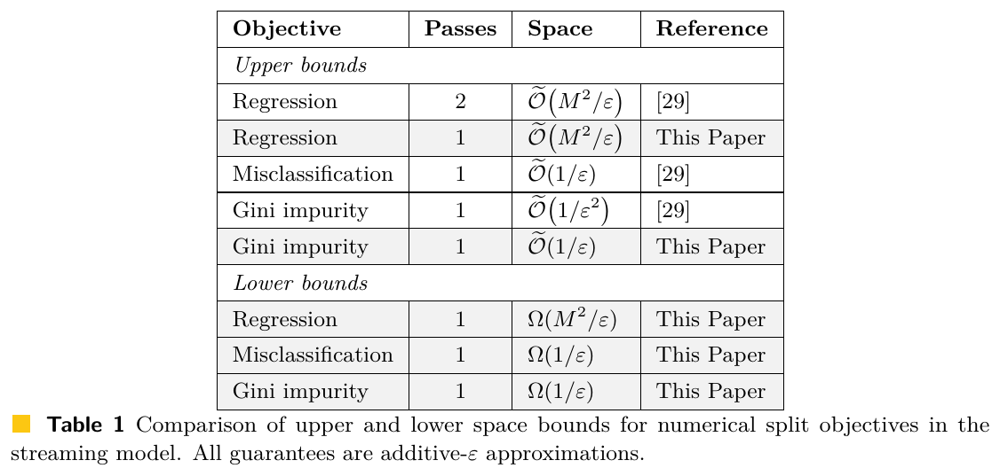
Nearly Optimal Bounds for Computing Decision Tree Splits in Data Streams, arXiv:2604.20394v2, Table 1. [29] là bài 2." style="max-height:300px;max-width:100%;width:auto;height:auto;border:1px solid var(--border);border-radius:8px;background:#fff">Nguồn: Tạ, Vu, Nearly Optimal Bounds for Computing Decision Tree Splits in Data Streams, arXiv:2604.20394v2, Table 1. [29] là bài 2.
🗣️ Nói nôm na:cận trên là "tôi làm được với chừng này bộ nhớ". Cận dưới là "không ai làm được với ít hơn chừng này". Khi hai con số gặp nhau thì bài toán coi như đã giải xong về mặt bộ nhớ.
Cách đọc: nửa trên là thuật toán (Upper bounds), nửa dưới là giới hạn (Lower bounds). Cột Reference cho biết kết quả của bài nào: [29] là bài 2, "This Paper" là bài 3. Mọi dòng đều là sai số cộng $\varepsilon$.
Mục tiêu
Trước bài 3
Bài 3
Cận dưới (bài 3)
Kết luận
Hồi quy
2 lượt, $\tilde O(M^2/\varepsilon)$
1 lượt, $\tilde O(M^2/\varepsilon)$
$\Omega(M^2/\varepsilon)$
Khớp
Phân loại sai
1 lượt, $\tilde O(1/\varepsilon)$
(giữ nguyên)
$\Omega(1/\varepsilon)$
Khớp: thuật toán của bài 2 đã tối ưu
Gini
1 lượt, $\tilde O(1/\varepsilon^2)$
1 lượt, $\tilde O(1/\varepsilon)$
$\Omega(1/\varepsilon)$
Khớp
Ví dụ số (minh hoạ), $\varepsilon=0{,}01$, $M=1$: Gini trước đây cần cỡ $1/\varepsilon^2=10\,000$ đơn vị bộ nhớ, nay cỡ $1/\varepsilon=100$, giảm 100 lần; và cận dưới nói không thể xuống dưới cỡ 100.
Vì sao $M^2$ xuất hiện
Nhãn nằm trong $[0,M]$ thì lỗi bình phương lớn cỡ $M^2$. Đổi đơn vị nhãn $y\to y/M$ làm lỗi chia cho $M^2$, nên sai số $\varepsilon$ trên nhãn gốc tương đương sai số $\varepsilon/M^2$ trên nhãn đã chuẩn hoá. Bài báo dùng đúng phép co giãn này ở cả cận trên lẫn cận dưới.
Thuật toán một lượt: reservoir sampling và ba Count-Min sketch
🗣️ Nói nôm na: hai việc chia nhau. Một người bốc thăm vài giá trị $x$ làm ứng viên (reservoir sampling). Ba cuốn sổ Count-Min ghi sổ mọi điểm: sổ 1 đếm số điểm, sổ 2 cộng nhãn, sổ 3 cộng bình phương nhãn,
để tra nhanh cho bất kỳ khoảng nào.
Bước
Nội dung (theo bài báo)
1
Giữ một reservoir sample cỡ $K$ trong suốt luồng; sau luồng, ứng viên $S=\{0,N\}\cup\{x,x-1\}$ với $x$ trong mẫu
2
Đồng thời duy trì 3 sketch Count-Min hỗ trợ truy vấn khoảng với $k=1/\beta$ cho 3 luồng $(x_i,1)$, $(x_i,y_i)$, $(x_i,y_i^2)$
3
Truy vấn ra ước lượng $\hat n_R,\hat s_R,\hat q_R$ cho mọi khoảng $R$; đặt $\widehat{\mathrm{SSE}}(R)=\hat q_R-\hat s_R^2/(\hat n_R+\beta m)$ (mẫu số cộng $\beta m$ để kiểm soát sai số do ước lượng dư; nếu $\hat n_R=0$ thì đặt SSE bằng 0)
4
Với mỗi ứng viên $j\in S$: $\hat L_{\mathrm{MSE}}(j)=\frac1m\big(\widehat{\mathrm{SSE}}([1,j])+\widehat{\mathrm{SSE}}([j+1,N])\big)$
5
Trả về $\hat j=\arg\min_{j\in S}\hat L_{\mathrm{MSE}}(j)$
Ba moment và SSE: với khoảng $R$ đặt $n_R=\sum\mathbf 1[x_i\in R]$, $s_R=\sum\mathbf 1[x_i\in R]y_i$, $q_R=\sum\mathbf 1[x_i\in R]y_i^2$. Khi đó $\sum_{x_i\in R}(y_i-\bar y_R)^2=q_R-s_R^2/n_R=\mathrm{SSE}(R)$ và $m\,L_{\mathrm{MSE}}(j)=\mathrm{SSE}([1,j])+\mathrm{SSE}([j+1,N])$.
Kiểm tra bằng ví dụ 8 điểm: $\mathrm{SSE}([1,4])=198-28^2/4=2$, $\mathrm{SSE}([5,8])=18-8^2/4=2$, nên $m\,L=4$, $L=0{,}5$, khớp bảng tính tay.
Vì sao kết hợp hai công cụ
Lấy mẫu cho ta tập ứng viên nhỏ chứa một điểm chia gần tối ưu (nhờ tính Lipschitz của hàm mất mát); Count-Min cho số đếm theo khoảng của ba moment trong 1 lượt với bộ nhớ nhỏ.
Định lý 1: bộ nhớ $\tilde O(M^2/\varepsilon)$, cập nhật $O(1)$, $L_{\mathrm{MSE}}(\hat j)\le\mathrm{OPT}+\varepsilon$ với xác suất cao.
Định lý gốc về Count-Min với truy vấn khoảng: công cụ nền của bài 3
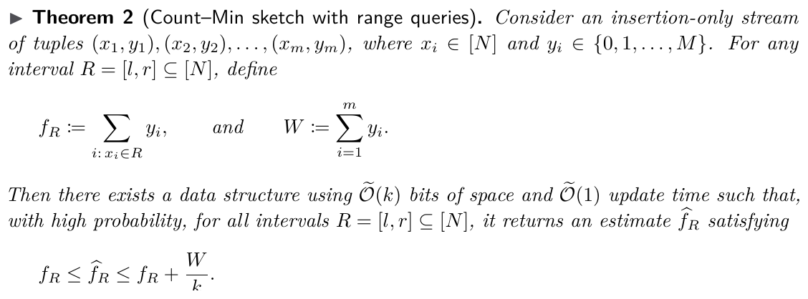
Nearly Optimal Bounds for Computing Decision Tree Splits in Data Streams, arXiv:2604.20394v2, Theorem 2 (theo Cormode và Muthukrishnan)." style="max-height:250px;max-width:100%;width:auto;height:auto;border:1px solid var(--border);border-radius:8px;background:#fff">Nguồn: Tạ, Vu, Nearly Optimal Bounds for Computing Decision Tree Splits in Data Streams, arXiv:2604.20394v2, Theorem 2 (theo Cormode và Muthukrishnan).
🗣️ Nói nôm na: một cuốn sổ nhỏ ghi nhanh. Hỏi "tổng nhãn của các điểm có $x$ từ $l$ tới $r$ là bao nhiêu?", sổ trả lời con số không bao giờ thấp hơn thật, và cao hơn thật nhiều nhất $W/k$.
Đọc định lý: $f_R$ là tổng nhãn trong khoảng $R$; $W$ là tổng nhãn của cả luồng; $k$ là kích cỡ sổ. Đảm bảo: $f_R\le\hat f_R\le f_R+W/k$ cho mọi khoảng cùng lúc, bộ nhớ $\tilde O(k)$, cập nhật $\tilde O(1)$.
Ví dụ (minh hoạ)
Tính
$W=1000$, $k=100$
Mỗi câu trả lời dư tối đa $1000/100=10$
Muốn dư tối đa 1
Cần $k=1000$: bộ nhớ tăng 10 lần
Bài 3 dùng ba cuốn sổ cho ba luồng: $(x_i,1)$ để đếm số điểm $n_R$; $(x_i,y_i)$ để cộng nhãn $s_R$; $(x_i,y_i^2)$ để cộng bình phương nhãn $q_R$. Bài báo đặt các tham số:
Thay số (minh hoạ), $\varepsilon=0{,}1$, $M=1$: $\tau=1/160$, $\beta=1/320$, cỡ sổ $k=1/\beta=320$, cỡ mẫu reservoir $K$ cỡ $160\log N$. Cả hai đều cỡ $M^2/\varepsilon$ nhân hệ số log, đúng bằng cận bộ nhớ của Theorem 1.
Vì sao mẫu số được cộng thêm $\beta m$
Sổ chỉ ước lượng dư, không bao giờ thiếu. Trong $\mathrm{SSE}=q-s^2/n$, một $\hat n$ gần 0 có thể làm phép chia nhảy vọt; cộng $\beta m$ vào mẫu số giữ cho phép chia ổn định với cái giá là một sai lệch nhỏ đã được tính trong $\varepsilon$.
Gini quy về hồi quy: đồng nhất thức $L_{\mathrm{Gini}}=2L_{\mathrm{MSE}}$
Chỉ cần mã hoá lại nhãn: $z_i=(y_i+1)/2\in\{0,1\}$. Bài báo chứng minh với mọi ngưỡng $j$: $L_{\mathrm{Gini}}(j)=2\,L_{\mathrm{MSE}}(j)$ trên luồng $(x_i,z_i)$.
Hệ quả: $\mathrm{OPT}_{\mathrm{Gini}}=2\,\mathrm{OPT}_{\mathrm{MSE}}$ và hai tiêu chí có cùng ngưỡng tối ưu.
Kiểm chứng bằng ví dụ ở phần trước ($m=6$, trái nhãn $(+1,+1,-1)$, phải nhãn $(-1,-1,+1)$):
Đại lượng
Tính
Kết quả
$L_{\mathrm{Gini}}$
$\tfrac36\cdot\tfrac49+\tfrac36\cdot\tfrac49$
$4/9\approx0{,}444$
Mã hoá lại
Trái $z=(1,1,0)$ trung bình $2/3$; phải $z=(0,0,1)$ trung bình $1/3$
SSE trái
$2\cdot(1/3)^2+(2/3)^2$
$2/3$
SSE phải
$2\cdot(1/3)^2+(2/3)^2$
$2/3$
$L_{\mathrm{MSE}}$
$(2/3+2/3)/6$
$2/9\approx0{,}222$
$2L_{\mathrm{MSE}}$
$2\times 2/9$
$4/9$ = $L_{\mathrm{Gini}}$
Hệ quả thuật toán
Áp dụng thuật toán hồi quy với $M=1$ và sai số $\varepsilon/2$: bộ nhớ $\tilde O(M^2/(\varepsilon/2))=\tilde O(1/\varepsilon)$, và nhân đôi trở lại cho $L_{\mathrm{Gini}}(\hat j)\le\mathrm{OPT}_{\mathrm{Gini}}+\varepsilon$.
Nhờ vậy Gini giảm từ $\tilde O(1/\varepsilon^2)$ (bài 2) xuống $\tilde O(1/\varepsilon)$ chỉ bằng một phép mã hoá, một ví dụ đẹp về việc đổi bài toán thay vì đổi thuật toán.
Cận dưới: quy dẫn từ bài toán Index
🗣️ Nói nôm na: An cầm một dãy bit dài $n$ và chỉ được gửi cho Bình một tin nhắn; Bình chỉ muốn biết bit thứ $i$ (An không biết $i$). Dù An khôn khéo thế nào, tin nhắn vẫn phải dài cỡ $n$ bit: đó là bài toán Index.
Phần
Nội dung
Bài toán Index
Alice giữ $z\in\{0,1\}^n$, Bob giữ $i\in[n]$, Bob phải xuất $z_i$. Mọi giao thức ngẫu nhiên một chiều thành công với xác suất $\ge2/3$ cần $\Omega(n)$ bit truyền
Khuôn mẫu chung
Dựng một luồng có hai ngưỡng chia liền kề cạnh tranh, mà việc ngưỡng nào tốt hơn tiết lộ bit ẩn
Cách dùng bộ nhớ
Alice đưa dữ liệu mã hoá $z$ vào luồng và chạy thuật toán streaming; trạng thái bộ nhớ chính là "tin nhắn" gửi cho Bob. Bob thêm dữ liệu ứng với chỉ số $i$ rồi xem thuật toán chọn ngưỡng nào để suy ra $z_i$
Kết luận
Bộ nhớ của thuật toán không thể nhỏ hơn số bit cần để giải Index: hồi quy cần $\Omega(M^2/\varepsilon)$ (nhờ co giãn nhãn: $L(y)=M^2L(y/M)$), misclassification và Gini cần $\Omega(1/\varepsilon)$
Ví dụ số (minh hoạ): $\varepsilon=0{,}001$, $M=1$: cần ít nhất cỡ $1/\varepsilon=1\,000$ bit. Nếu nhãn lớn $M=10$: $M^2/\varepsilon=100\,000$ bit, tức nhân $100$ lần chỉ vì khoảng nhãn rộng gấp 10.
Điều bài báo nêu là còn mở
Các cận dưới áp dụng cho thuật toán ngẫu nhiên (thành công với xác suất tối thiểu $2/3$). Độ phức tạp của thuật toán tất định cho bài toán này vẫn là câu hỏi mở.
Hình gốc Figure 2 của bài 3: dựng luồng cho cận dưới hồi quy
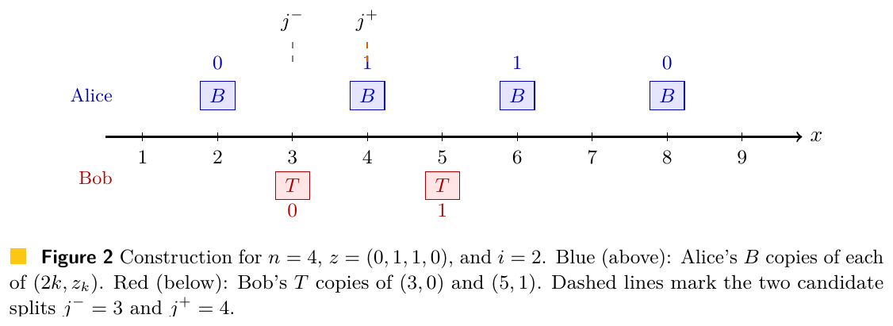
Nearly Optimal Bounds for Computing Decision Tree Splits in Data Streams, arXiv:2604.20394v2, Figure 2." style="max-height:270px;max-width:100%;width:auto;height:auto;border:1px solid var(--border);border-radius:8px;background:#fff">Nguồn: Tạ, Vu, Nearly Optimal Bounds for Computing Decision Tree Splits in Data Streams, arXiv:2604.20394v2, Figure 2.
Cách đọc hình (trường hợp $n=4$, dãy bit của Alice $z=(0,1,1,0)$, Bob hỏi bit thứ $i=2$):
Ô xanh phía trên (Alice): tại $x=2,4,6,8$ có $B$ điểm với nhãn lần lượt là $z_1,z_2,z_3,z_4=0,1,1,0$. Đây là cách Alice "giấu" dãy bit vào luồng.
Ô đỏ phía dưới (Bob): $T$ điểm nhãn 0 tại $x=2i-1=3$ và $T$ điểm nhãn 1 tại $x=2i+1=5$. Hai khối "mỏ neo" này rất nặng và kẹp hai bên khối $x=4$.
Hai vạch đứt: $j^-=3$ đẩy khối $x=4$ sang phải; $j^+=4$ giữ khối $x=4$ ở bên trái.
Ý tưởng: bên trái vạch gần như toàn nhãn 0, bên phải gần như toàn nhãn 1. Khối $x=4$ mang nhãn $z_2$ nên xếp cùng phía với mỏ neo giống nhãn thì lỗi nhỏ hơn. Vậy thuật toán chọn $j^-$ khi $z_i=1$, chọn $j^+$ khi $z_i=0$: nhìn đáp án là đọc được bit.
Vì hai mỏ neo rơi cùng một phía, mỗi mỏ neo lệch trung bình $1/2$
Claim 15: $L(j^\pm)\le1/201$
$\approx0{,}00498$
Hai giá trị ở trên đều nhỏ hơn, khớp
Khoảng cách $|L(j^+)-L(j^-)|>1/(804n)$
$\approx0{,}00031$
Thực tế $0{,}00124$, khớp; và $j^-$ tốt hơn vì $z_2=1$
Từ hình tới cận dưới
Đặt $n=\lfloor1/(1000\varepsilon')\rfloor$ thì khoảng cách giữa hai ngưỡng lớn hơn $\varepsilon'$, nên thuật toán sai số $\varepsilon'$ buộc phải chọn đúng. Bộ nhớ sau khi đọc phần của Alice chính là tin nhắn gửi Bob, mà Index cần $\Omega(n)$ bit, tức $\Omega(1/\varepsilon')=\Omega(M^2/\varepsilon)$.
Hình gốc Figure 3 của bài 3: cùng khuôn mẫu cho phân loại
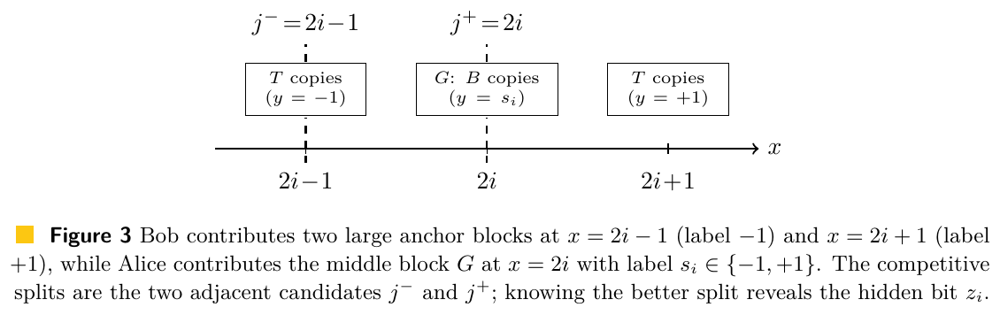
Nearly Optimal Bounds for Computing Decision Tree Splits in Data Streams, arXiv:2604.20394v2, Figure 3." style="max-height:240px;max-width:100%;width:auto;height:auto;border:1px solid var(--border);border-radius:8px;background:#fff">Nguồn: Tạ, Vu, Nearly Optimal Bounds for Computing Decision Tree Splits in Data Streams, arXiv:2604.20394v2, Figure 3.
Cách đọc hình: giống Figure 2 nhưng nhãn là $\pm1$. Bob đặt $T$ điểm nhãn $-1$ tại $x=2i-1$ và $T$ điểm nhãn $+1$ tại $x=2i+1$. Alice đặt khối $G$ gồm $B$ điểm tại $x=2i$ với nhãn $s_i=+1$ nếu $z_i=1$, ngược lại $-1$. Hai ngưỡng cạnh tranh vẫn là $j^-=2i-1$ và $j^+=2i$.
Nhóm tự tính với $n=4$, $z=(0,1,1,0)$, $i=2$: $B=4$, $T=64$, $m=144$. Với $j^-=3$: bên trái toàn nhãn $-1$ (sai 0), bên phải có 72 nhãn $+1$ và 4 nhãn $-1$ (sai 4), nên $L=4/144$. Với $j^+=4$: bên trái có 68 nhãn $-1$ và 4 nhãn $+1$ (sai 4), bên phải sai 4, nên $L=8/144$. Ngưỡng $j^-$ tốt hơn, đúng với $z_2=1$; khoảng cách là $B/m=1/(9n)$.
Một khuôn, ba kết quả
Bài báo nêu rõ các cận dưới cùng theo một khuôn: dựng luồng có hai ngưỡng liền kề cạnh tranh mà ngưỡng thắng tiết lộ bit ẩn. Chỗ khác nhau chỉ là phép tính khoảng cách cho từng hàm lỗi. Gini thì suy ra từ hồi quy nhờ $L_{\mathrm{Gini}}=2L_{\mathrm{MSE}}$.
PHẦN 8/9
08
Nối với Hadoop: số vòng, shuffle và combiner, và những điều các bài báo không nói
Mỗi mapper dựng sketch riêng, reducer cộng lại (như combiner)
Suy luận của nhóm (bài báo chỉ dùng Count-Min cho luồng có xoá)
Luồng sự kiện vào liên tục
Kafka là nguồn luồng (hd-05)
Đối chiếu của nhóm
Cách dùng bảng này
Khi trình bày hay bị hỏi, nên nói rõ cột "mức chắc chắn": chỉ những dòng in đậm là câu chữ của bài báo; các dòng còn lại là cách nhóm hiểu để nối với kiến thức Chương 2.
Đã chứng minh, còn mở, và nhóm suy luận
Đã chứng minh (theo các bài đã đọc)
Streaming, hồi quy: thuật toán 1 lượt $\tilde O(M^2/\varepsilon)$ và cận dưới khớp $\Omega(M^2/\varepsilon)$ (bài 3).
Streaming, Gini: thuật toán 1 lượt $\tilde O(1/\varepsilon)$ và cận dưới $\Omega(1/\varepsilon)$ (bài 3); misclassification $\tilde O(1/\varepsilon)$ khớp $\Omega(1/\varepsilon)$.
Thuộc tính phân loại: $\tilde O(N/\varepsilon)$ và $\Omega(N)$ cho mọi thuật toán hằng số lượt (bài 1, 2).
MPC: các cận trên $O(1)$ vòng và $O(1/\beta)$ vòng (bài 1, 2).
Còn mở (theo chính các bài hoặc theo việc các bài không nêu)
Độ phức tạp của thuật toán tất định (bài 3 nêu).
Bài 3 chỉ xét streaming; bảng MPC của bài 2 chỉ có cận trên. Các bài đã đọc không nêu cận dưới MPC, và không nói thuật toán 1 lượt của bài 3 có chuyển sang MPC với ít vòng hơn hay không.
Dựng cả cây (không chỉ cây sâu 1): các bài chỉ nói áp dụng lặp lại, thêm lượt duyệt.
Suy luận của nhóm (không phải khẳng định của bài báo)
Count-Min cộng được từng ô nên có thể dựng sketch riêng ở từng mapper rồi cộng ở reducer.
Tính chất "giữa hai ứng viên có không quá $\varepsilon m$ quan sát" giống một xấp xỉ phân vị.
Mỗi bước MPC dịch được thành giai đoạn MapReduce như bảng đối chiếu trước.
PHẦN 9/9
09
Tổng kết: ba bài báo, một câu chuyện nối tiếp
Từ thuật toán chính xác tới xấp xỉ, từ 2 lượt tới 1 lượt, từ cận trên tới cận khớp
Danh mục trích dẫn và liên kết tới PDF
Ba bài báo nối tiếp nhau như thế nào
Mốc
Bài
Đóng góp chính
28/03/2024
arXiv:2403.19867v1 Finding Decision Tree Splits in Streaming and Massively Parallel Models
Thuật toán chính xác 1 lượt $\tilde O(D)$; xấp xỉ 2 lượt $\tilde O(1/\varepsilon)$; $O(\log N)$ lượt cho $(1+\varepsilon)$; phân loại; thuộc tính phân loại; MPC $O(1)$ vòng
16/04/2025 (ISIT 2025)
arXiv:2403.19867v4 Constructing Decision Trees from Data Streams
Thêm Gini; tổng quát hoá lượt-bộ nhớ qua $\beta$: $O(1/\beta)$ lượt; viết lại phần MPC theo $\beta$
07/07/2026 (ESA 2026)
arXiv:2604.20394v2 Nearly Optimal Bounds for Computing Decision Tree Splits in Data Streams
1 lượt cho hồi quy và Gini; $\tilde O(M^2/\varepsilon)$ khớp $\Omega(M^2/\varepsilon)$; Gini quy về hồi quy; không cần biết $m$ trước
Mạch phát triển
Mỗi bài trả lời câu hỏi mà bài trước để lại: bài 1 chứng minh làm được với bộ nhớ nhỏ; bài 2 làm rõ đổi lượt lấy bộ nhớ như thế nào và đưa Gini vào; bài 3 trả lời câu hỏi
"còn làm tốt hơn nữa được không?" bằng cách vừa giảm xuống 1 lượt vừa chứng minh không thể nhỏ hơn.
Các bài viết bởi Huy Phạm, Tạ Duy Hoàng, Hoa T. Vu (bài 1, 2) và Tạ Duy Hoàng, Hoa T. Vu (bài 3).
Danh mục trích dẫn và tài liệu đọc tiếp
#
Trích dẫn
PDF
[1]
H. Phạm, H. Ta, H. T. Vu. Finding Decision Tree Splits in Streaming and Massively Parallel Models. arXiv:2403.19867v1, 2024.
Đọc phần Introduction và Figure 1 của bài 1; rồi Algorithm 1 đến 3 của bài 2 (Mục 2); rồi Table 1 và Theorem 1 của bài 3; cuối cùng Mục 4 của bài 2 (MPC) để nối với MapReduce.
Ôn trước các module 04, 05 (Chernoff, Hoeffding và hợp xác suất), 11 (Count-Min) và 12 (cây dyadic, rank) sẽ giúp đọc nhanh hơn nhiều.
Hệ thống tự học mở, xây từ giáo trình Sketching Algorithms (Jelani Nelson) và lộ trình 14 buổi
tự học môn Lưu trữ & xử lý dữ liệu lớn. Toàn bộ nội dung, bài tập, quiz chạy tĩnh, không cần server.

![Trang đầu bài báo 1, arXiv:2403.19867v1 [cs.DS], 28/03/2024.](../../../assets/images/papers/ta1_title.png)
![Trang đầu arXiv:2403.19867v4 [cs.DS], 16/04/2025, công bố tại ISIT 2025.](../../../assets/images/papers/ta2_title.png)


![Trang đầu arXiv:2604.20394v2 [cs.DS], 07/07/2026, ESA 2026.](../../../assets/images/papers/ta3_title.png)